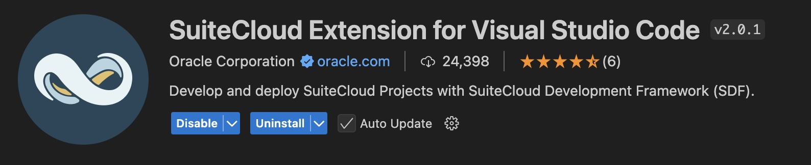

Install SuiteCloud SDK
SuiteApp development is done locally. This enables many modern coding good practices, such as the use of version control tools, which we emphatically recommend.
We offer an SDK that gives you many actions to make the development process much easier and smoother. You can install the SDK by navigating to:
Alternatively, you can install the SuiteCloud extension for VSCode.
